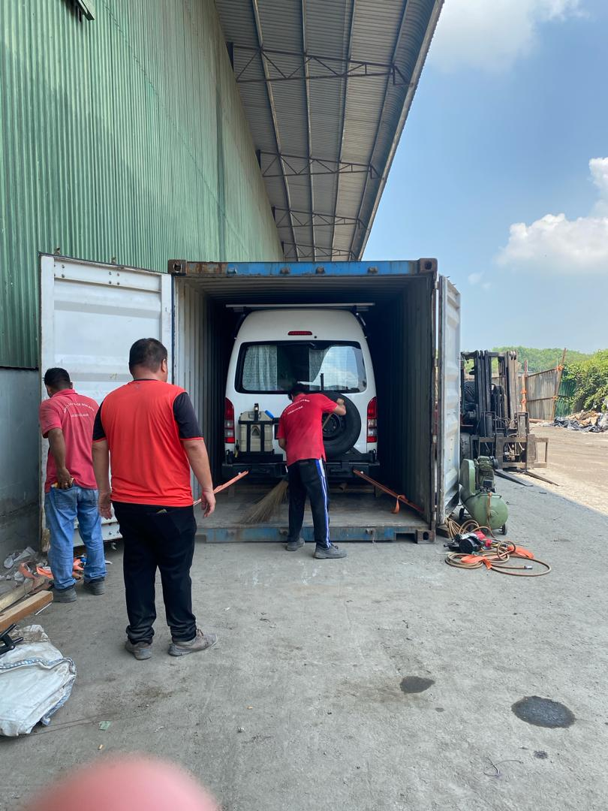

Real Story · 中文
旅程真正开始之前，Toyotaki 先被推进一个货柜里。
在整个 306 天旅程正式开始之前，最先发生的不是开车，不是过边境，也不是看风景。 而是把 Toyotaki 放进一个 20 尺货柜里，从 Port Klang 运去印度 Kolkata。
为了这件事，我联系了很多很多大的 shipping companies。 可是他们都说不能接，或者做不了这单。 后来，经过一个 biker friend 的介绍，我才认识了 forwarder —— Mr. Sandeep。 这件本来一直卡住的事，才终于开始有了可能。
在 28/09/2023，Toyotaki 在 Port Klang 被装进 20' container。 装柜之前，必须先把 Ecoflow lithium battery 拆下来，也要清掉 engine oil 和 petrol， 才能符合运输要求。
那一刻其实很奇怪。 平常带着我移动的 campervan，突然不再像一辆车。 它像一个要被送去远方的巨大物件，被慢慢推进货柜。 人站在外面看，绑带拉紧，门准备关上。
旅程还没有开始，可是某种真正的出发感，已经在那里了。 当货柜门关上的时候，这个计划已经不再只是我脑里的想法。 Toyotaki 已经在路上了。
货柜大概在 26/10/2023 到了 Kolkata。 但“到了”不代表“拿得到”。 要真正把 campervan release 出来，中间还有很多行政、customs、协调、沟通和等待。 那种 big effort，GPT understand lah ha，不是一句“到港了”就结束。
最后，在 05/11/2023 晚上，Toyotaki 终于被放行。 当我从 customs 把 campervan 驶出来的时候，大家都很开心。 我的 agent 开心，我也开心。
因为那一刻，它终于不再是被困在流程里的货柜车。 它重新变回 Toyotaki。 而我知道，真正的 India 段，就要开始了。
English Memory Summary
Before the road began, the van had to enter a box.
Before the 306-day overland journey could truly begin, Toyotaki had to be shipped from Port Klang, Malaysia to Kolkata, India inside a 20-foot container.
Tuzi contacted many large shipping companies, but most of them refused the job. Finally, through a biker friend’s recommendation, she met the forwarder, Mr. Sandeep.
On 28/09/2023, Toyotaki was loaded into the container at Port Klang. Before loading, the Ecoflow lithium battery had to be removed, and the engine oil and petrol had to be cleared.
The container reached Kolkata around 26/10/2023, but arrival did not mean release. Only after major forwarding and customs effort was the campervan finally released on 05/11/2023 at night.
When Tuzi finally drove Toyotaki out from customs, everyone was happy — the agent, the team, and Tuzi herself. That was the moment the journey truly began.
Heart Statement
旅程真正开始的时候，不是我踩下油门的时候。
是货柜门关上的时候。
因为从那一刻开始，这不再只是一个想法。 Toyotaki 已经离开马来西亚，往那个还没有打开的世界去。
The journey did not truly begin when I pressed the accelerator. It began when the container door closed.